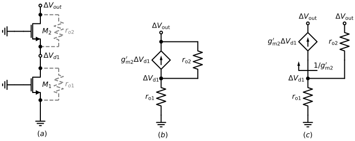
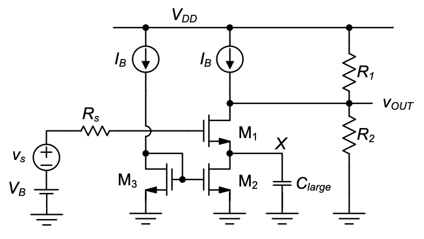

5 Biasing Circuits
The elementary transistor stages analyzed in the previous chapters rely on proper voltage and current biasing to function. So far, we have emulated these bias generators using ideal voltage and current sources. In this chapter, we will look at practical realizations of these elements using MOSFETs and passive components available within an integrated circuit.
While there exist numerous possibilities for setting up bias voltages and currents, we consider here a subset of options that have proven to be robust in practical circuits produced in volume. Many of the ideas and considerations that go into the design of bias circuitry are intimately related to the parameter variations seen in an integrated circuit process technology. For instance, threshold voltages cannot be accurately reproduced from fabrication run to fabrication run, and this mandates certain measures for desensitization to this parameter. In order to understand the rationale behind the proposed biasing circuits, we therefore include an overview of the basic variability issues that analog CMOS circuit designers must be aware of.
Chapter Objectives
Review basic variability issues relevant for analog integrated circuits in CMOS technology.
Discuss and analyze practical circuits that can establish the bias voltages and currents required to operate the elementary common-source, common-gate and common-drain stages.
5.1 Overview
Figure 5.1 provides and overview of the circuitry and topics that will be discussed in this chapter. The function of the shown circuits will be explained as we progress through this chapter. Following this introduction, we will investigate basic issues of process variation and device mismatch seen in a typical CMOS fabrication process. This review will help motivate some of the design choices made in later sections. Next, in Section 5.3, we investigate current mirror circuits, which are essential to distributing and generating bias currents in an integrated circuit.
The current that flows into a current mirror circuit is defined by an absolute current reference, for which there exist many different realizations. In Section 5.4, we will study one relevant example of a suitable circuit. In Section 5.5, we will then shift to the problem of bias voltage generation, as relevant for example in setting up the proper gate bias of a common-source or common-gate stage.
5.2 Introduction to Process Variation and Device Mismatch
5.2.1 Process and Temperature Variations
In our analysis of elementary circuit configurations, we have so far implicitly assumed that the underlying component parameters (e.g., the threshold voltage of a MOSFET) are constant and accurately known. Unfortunately, this is not the case in reality. Especially in mass-produced integrated circuits, there are various forms of variability that result in parameter uncertainty due to imperfect fabrication, lifetime drift and influence of environmental conditions such as temperature and humidity. In a typical large semiconductor company, entire departments tend to focus on this issue, and there exists a wealth of related information that could easily fill multiple textbooks. As a result, the focus in this introductory module is to take a cursory look at only the basic issues, to the extent that this can help shape our thinking on how to arrive at practical and relatively insensitive circuit realizations.
The first issue that we will review in this section is related to variations arising from imperfect fabrication and temperature changes. In the context of fabrication imperfections, we will clearly distinguish between global process variations and device mismatch. The former term relates to variations that affect all devices on a chip uniformly, while the latter term refers to differences between nominally identical devices that are fabricated on the same chip (see Section 5.2.2).
Analog circuit designers often use the term PVT variations to refer to global variations in process, supply voltage, and temperature (see Table 5.1). The most basic way to capture global fabrication process variations is to define parameter sets that group the worst case outcomes as “slow,” “nominal,” and “fast” conditions. This nomenclature was adopted in the context of digital circuits (relating to the speed of a logic gate), but is also used among analog designers. The various parameter sets are often called process corners.
| \(\textbf{Process}\) | The chip foundry defines three parameter sets for “slow,” “nominal,” and “fast” conditions. |
| \(\textbf{Voltage}\) | The chip’s supply voltage is expected to vary by ±10%. For a nominal supply of 5 V, this means that all circuits must work for \(V_{DD}\) = 4.5…5.5 V. |
| \(\textbf{Temperature}\) | Consumer products are typically expected to work in ambient temperatures ranging from 0…70° C. Circuits used in automotive applications must work reliably from –40…125° C. |
Table 5.2 shows how some important integrated circuit parameters may vary across the three process parameter sets. Here, the nominal column contains the MOSFET parameters that we have assumed so far in this module (see Table 4-1). In the slow parameter set, the threshold voltage is increased and the transconductance parameters (μ\(C_{ox}\)) are reduced; this is the parameter combination that yields the slowest speed in a logic gate. The opposite is true for the fast parameter set.
| Parameter | Slow | Nominal | Fast |
|---|---|---|---|
| \(V_{T0n}\) , \(|{V_{T0p}|}\) | 0.7 V | 0.5 V | 0.3 V |
| \(\mu_n C_{ox}\) | 40 \(\mu A/V^2\) | 50 \(\mu A/V^2\) | 60 \(\mu A/V^2\) |
| \(\mu_p C_{ox}\) | 20 \(\mu A/V^2\) | 25 \(\mu A/V^2\) | 30 \(\mu A/V^2\) |
| \(R_{poly}\) | 60 \(\Omega /square\) | 50 \(\Omega /square\) | 40 \(\Omega /square\) |
| \(R_{well}\) | 1.4 \(k\Omega /square\) | 1 \(k\Omega /square\) | 0.6 \(k\Omega /square\) |
| \(C_{poly}\) | 1.15 \(fF/\mu m^2\) | 1 \(fF/\mu m^2\) | 0.85 \(fF/\mu m^2\) |
Table 5.2 also contains examples for parameter variations in passive IC components. \(R_{poly}\) and \(R_{well}\) are the sheet resistances of a resistor formed by a layer of polysilicon or n-well, respectively. \(C_{poly}\) is the capacitance parameter of a parallel plate capacitor formed by two layers of polysilicon. Advanced texts on integrated circuit design such as (Gray et al. 2009) provide further information about the make-up of these and similar components.
The tabulated parameter variations do not take temperature variations into account; these must be added on top of the spread from fabrication. Table 5.3 lists a few typical temperature coefficients for each parameter. For example, if the operating temperature of a chip changes from 0°C to 70°C, the threshold voltage a MOSFET will shift by an additional –84 mV.
| Parameter | Temperature Coefficient |
|---|---|
| \(V_{T0n}\) , \(|{V_{T0p}|}\) | \(-\) 1.2 mV/°C |
| \(\mu_n C_{ox}\) | \(-\) 0.33 %/°C |
| \(\mu_p C_{ox}\) | \(-\) 0.33 %/°C |
| \(R_{poly}\) | \(+\) 0.2 %/°C |
| \(R_{well}\) | \(+\) 1 %/°C |
| \(C_{poly}\) | \(-\) 30 ppm/°C |
The main take-home from the shown data is that in practice, the analog IC designer cannot view component parameters as constant numbers. His or her circuit must be immune to the level of variability described and function reliably across a large array of outcomes in process, voltage, and temperature. To show how significant these effects can be when neglected, the following example considers the impact of process variations on the bias point of a common-source amplifier.
Example 5-1: Impact of Process variations in a Common Source Amplifier
The circuit in Figure 5.2 was previously analyzed in Example 2-2(b) using nominal parameters (at room temperature). Given \(V_{DD}\) = 5 V, \(R_D\) = 10 kΩ, W/L = 10 and a desired output bias point of \(V_{OUT}\) = 2.5 V, we found that the input bias voltage should be set to \(V_{IN}\) = 1.5 V. Assuming \(V_{IN}\) = 1.5 V, recompute the circuit’s operating assuming that the MOSFET parameters have shifted to the fast corner case given in Table 5.2. For simplicity, ignore variations in \(R_D\) and operating temperature.
SOLUTION
Using the given parameters, we can directly compute:
\[ \begin{split} V_{out} &= V_{DD} - \frac{1}{2}\mu _n C_{ox}\frac{W}{L}\Bigl(V_{IN} - V_{Tn}\Bigr)^2 R_D \\ &= 5V-\frac{1}{2}\cdot 60 \frac{\mu A}{V^2} \cdot 10 \cdot (1.5 - 0.3)^2 \cdot 10k\Omega = 0.68 V \end{split} \]
From this result, we see that the MOSFET no longer operates in saturation (since \(V_{DS}\) = 0.68 V < \(V_{GS}\) – \(V_{Tn}\) = 1.2 V). Using the MOSFET’s equation for the triode region, we can compute \(I_D\) = 408 μA and \(V_{OUT}\) = 918 mV. This outcome differs substantially from the nominal operating point, and the circuit will essentially not function as intended for the fast corner conditions.
The main finding from the above example is that it will usually be impractical to bias the input of a common-source stage using a fixed bias voltage source. In practice, the integrated circuit designer generates bias voltages using circuits that will automatically adjust to corner-induced parameter spread and thereby make the circuit immune to process variations (see Section 5.5).
Generally speaking, a substantial amount of design time is usually spent on identifying biasing approaches that ensure a circuit’s proper bias point across all possible operating conditions. In addition, once, the circuit is properly biased, the designer must verify that it maintains its key specifications across corners. A typical scenario is to guarantee a certain worst-case gain or bandwidth across all PVT scenarios.
As already mentioned, it is impossible to cover all aspects of robust design across PVT variations at the introductory level of this module. Nonetheless, having some of the basic knowledge established above will help us argue qualitatively about the practicality of the circuits discussed in this chapter, and ensure that they will at least have a chance to work in practice.
5.2.2 Mismatch
The process variations discussed in the previous section account for variability that affects all devices on a given chip equally. For example, all n-channel MOSFETs on a given chip may have slow parameters. Different from process variation, we use the term mismatch to capture variations between nominally identical devices, e.g., two MOSFETs of identical size on the same chip. Such variations are typically caused by line edge roughness, random doping fluctuations and similar effects.
| Parameter | Mismatch |
|---|---|
| \(V_{T0n}\) , \(|{V_{T0p}|}\) | 5…30 mV |
| \(\mu_n C_{ox}\) , \(\mu_p C_{ox}\) | 0.5…2% |
| \(R_{poly}\) | 0.3…2% |
| \(C_{poly}\) | 0.1…1% |
Device mismatch typically follows Gaussian distributions and depends on device size and spacing (see Pelgrom, Duinmaijer, and Welbers 1989). For our purpose in this module, we will not expand upon the detailed theory behind this and instead consider only approximate numerical ranges that are typical for a technology as the one assumed in this module (see Table 5.4).
Pelgrom, M. J. M., A. C. J. Duinmaijer, and A. P. G. Welbers. 1989. “Matching Properties of MOS Transistors.” IEEE Journal of Solid-State Circuits 24 (5): 1433–39.
1 This tends to hold true for technologies with feature sizes above 100 nm. For nano-scale devices, device mismatch can be comparable to process spread.
At first glance, we see from Table 5.4 that device mismatches are typically much smaller than global process variations.1 For instance, the nominal threshold voltage for n-channel transistors can vary by ±200mV from fabrication run to fabrication run. However, within a specific fabrication outcome, the random threshold mismatch between two n-channels on the same chip is on the order of 10 mV.
This observation has a profound impact on the way integrated circuits are architected. That is, designers will usually try to exploit the fact that the components on the same chip show good matching. This contrasts with printed circuit board (PCB) design, where the designer often cannot rely on good matching between the available discrete components. Instead, PCB design can offer certain components with very high absolute accuracy across fabrication lots, such as 1%-precise resistors. As we know from Table 5.2, such levels of absolute accuracy are usually not available in an integrated circuit.
A classical example that exploits transistor matching is the so-called current mirror. This circuit is ubiquitous in integrated circuits, but infrequently used in PCB circuits. We will now analyze the current mirror as a first example of a biasing circuit that is insensitive to process variations
5.3 Current Mirrors
As we have seen in previous chapters, we would like to use current sources to setup the bias points for CS, CG, and CD stages. While we could in principle design individual, stand-alone current-source circuits each time we need a bias current, it is instead customary to work with only one (or a few) reference current generators on a given chip and “mirror” its current to the various locations where a bias current is needed. This is sketched out in Figure 5.1: a single reference current generator is used to feed a distribution network of current mirrors (to be discussed in this section), which then supplies bias currents to various circuit stages in a given chip or large sub-block.
In this section, we will discuss and analyze current mirror circuits at various levels of detail. We will begin by considering the most basic structure and perform a first-order analysis for this circuit. Next, we consider second-order error sources and look at an improved realization that invokes the cascode structure introduced in Section 4-5-1.
5.3.1 First-Pass Analysis of the Basic Current Mirror
Figure 5.3 shows the most basic realization of a current mirror using two identically sized n-channel MOSFETs. The circuit takes an input current \(I_{IN}\) and produces an output current \(I_{OUT}\). Neglecting channel-length modulation for the time being, we can compute the gate-source voltage of \(M_1\) using:
\[ V_{GS1} = V_{IN} = V_{Tn} + \sqrt{\dfrac{2 I_{IN}}{\mu_n C_{ox} \dfrac{W}{L}}} \tag{5.1}\]
Since the gates and sources of the two MOSFETs are connected, we see that \(V_{GS2}\) = \(V_{GS1}\), and therefore:
\[ \frac{I_{OUT}}{I_{IN}} = \frac{I_{D2}}{I_{D1}} = \\ \frac{\frac{1}{2}\mu _n C_{ox}\frac{W}{L}\Bigl(V_{GS2} - V_{Tn}\Bigr)^2}{\frac{1}{2}\mu _n C_{ox}\frac{W}{L}\Bigl(V_{GS1} - V_{Tn}\Bigr)^2} = 1 \tag{5.2}\]
Thus, the output current equals the input current (to first-order). In essence, the function of \(M_1\) is to “compute” the gate-source voltage required for \(M_2\) to supply the same current that is injected into \(M_1\).
One important feature of this circuit is that it is immune to global process variations. From Equation 5.2, we see that absolute changes in \(V_{Tn}\) and \(\mu _n C_{ox}\) that are common to \(M_1\) and \(M_2\) do not affect the current ratio. The circuit is affected only by mismatches in these parameters. However, as we have seen in Section 5.2.2, parameter mismatch tends to be small in integrated circuits.
Figure 5.4 shows an application example of the basic current mirror in a p-channel common-source amplifier. This example is useful for identifying some general design objectives:
- We want to minimize the error in \(I_{OUT}\) so that the bias current of the common-source device is accurately set (see also Section 2-2-8).
- We want to minimize the voltage that is needed to keep \(M_2\) in saturation (to allow for a large signal swing). We call this minimum voltage level the compliance voltage, \(V_{OUTmin}\).
- We want to minimize the capacitance \(C_{out}\) that the current mirror contributes to the output node of the amplifier. This will help maximize the circuit’s bandwidth.
- We want to maximize \(R_{out}\), the resistance looking into \(M_2\). A small \(R_{out}\) can substantially reduce the voltage gain of the circuit in some use cases.
- Lastly, it is desirable to scale the mirror’s branch currents, that is, we want \(I_{OUT} = K \cdot I_{IN}\), where typically \(K > 1\). This helps reduce the overall current consumption of the circuit and provides flexibility in adjusting the current values within a larger distribution network.
These objectives tend to hold in general for all types of current mirror implementations and we will keep them in mind as we progress through the remaining subsections. For the time being, let us look into the scaling of branch currents. Essentially, we would like to accomplish
\[ \frac{I_{OUT}}{I_{IN}} = \frac{I_{D2}}{I_{D1}} = \\ \frac{\frac{1}{2}\mu _n C_{ox}\frac{W_2}{L_2}\Bigl(V_{GS2} - V_{Tn}\Bigr)^2}{\frac{1}{2}\mu _n C_{ox}\frac{W_1}{L_1}\Bigl(V_{GS1} - V_{Tn}\Bigr)^2} = K \tag{5.3}\]
where \(K\) is the current scaling factor. From the above expression, assuming that \(V_{Tn}\) and \(\mu _n C_{ox}\) are exactly equal for both transistors, it follows that \(K = (W_2/L_2)/(W_1/L_1)\). Thus, current scaling can be conveniently realized by scaling the MOSFETs’ aspect ratios.
In practice, several guidelines exist on how exactly this scaling should be implemented. The first and most important guideline is that we should always maintain \(L_1\) = \(L_2\); the current scaling should be realized by scaling the widths rather than the lengths of the channels. This is preferable since the current in a modern MOSFET does not accurately scale with \(1/L\). As already mentioned in Chapter 2, the \(1/L\) proportionality in our equations is essentially due to the simplified physical model that we used in the derivation of the square-law expressions. For the 1-μm technology assumed in this module, the deviation from the square law model is not as severe as for today’s sub-100-nm transistors but still significant enough to avoid length scaling in current mirrors. Now, with \(L_1 = L_2\), the current scaling factor is simply \(K = W_2/W_1\), to first-order. In the next section, we will look at various second-order effects that cause \(K\) to deviate from the width ratio of the MOSFETs.
5.3.2 Second-Pass Analysis of the Basic Current Mirror
There exist several error sources in a current mirror that will affect its scaling factor. In general, we classify these error sources into two categories: systematic and random errors. Examples of systematic errors are
- Errors in transistor width ratios, for example due to mask misalignment or systematic etching imperfections.
- Differences in the drain-source voltages between \(M_1\) and \(M_2\), leading to current deviations caused by channel length modulation.
- Differences in the source potentials of \(M_1\) and \(M_2\) due to finite resistance in the interconnect (so-called “IR drop”).
Examples of random errors are
- Random mismatches in device geometries, for example due to line edge roughness.
- Random mismatch in the transistors’ threshold voltage or transconductance parameter.
In order to attain the best possible accuracy in a current mirror, the IC designer will typically try to minimize the impact of all of these errors. We will therefore analyze some of the most important effects and countermeasures in the following paragraphs. For simplicity, our analysis will consider each effect separately. Ultimately, however, the sum of all errors must be considered in practice.
To analyze the impact of systematic masking or etching errors, consider the specific example of a current mirror with a desired current ratio of two and a layout as shown in Figure 5.5. Here \(M_2\) is drawn twice as wide as \(M_1\) In an ideal situation, this would yield \(K = 2\) based on the first order result of the previous subsection. In a typical IC process, however, masking or etching errors can lead to a systematic error in the width of a MOSFET, indicated as ∆W in the shown layout. With this error, and neglecting any other imperfections for simplicity, we have
\[ K = \frac{I_{OUT}}{I_{IN}} = \frac{2 W_1 + \Delta W}{W_1 + \Delta W} = \dfrac{2 + \dfrac{\Delta W}{W_1}}{1 + \dfrac{\Delta W}{W_1}} \approx 2 - \dfrac{\Delta W}{W_1} \tag{5.4}\]
where the final approximation follows from a first-order Taylor expansion and holds for \(\Delta W / W_1 << 1\).
Especially for small transistors, the error term in Equation 5.4 can be significant. Therefore, it has become customary to adopt layout styles that eliminate issues due to ∆W altogether. In the improved layout of Figure 5.6, \(M_2\) is formed using two unit devices whose layout is identical to that of \(M_1\). In this case,
\[ K = \frac{I_{OUT}}{I_{IN}} = \frac{2 W_1 + \Delta W}{W_1 + \Delta W} = 2 \tag{5.5}\]
and thus the circuit is insensitive to systematic width errors. Note that the idea of working with unit devices can be extended such that \(P\) unit devices are used for \(M_2\) and \(Q\) unit devices are used to form \(M_1\) This means that the mirror ratio \(K = P/Q\) is restricted to rational numbers.
A variant of the improved unit-device layout is shown in Figure 5.7. Here, the two unit transistors share a single drain region at the output node and therefore have a smaller output capacitance (\(C_{out}\) in Figure 5.4). This general idea is often applied when small \(C_{out}\) is desired in the particular use case of the current mirror. One disadvantage of the layout in Figure 5.7 is that the source/drain orientation of the rightmost channel are flipped. This can lead to residual systematic errors in process technologies that suffer from source/drain asymmetries. However, it can be shown that this error vanishes when an even number of unit devices are used for both \(M_1\) and \(M_2\) These and many other considerations are part of the knowledge base of experienced analog designers. The reader is referred to advanced literature on this topic for further information.
Another significant source of error in the current mirror ratio can result from differences in the voltages at the input and output nodes of the mirror. To see this, consider the current mirror example in Figure 5.8, which is assumed to have perfectly matched transistors of the same size. Even though the two transistors have identical output curves, their drain currents will differ whenever the input and output voltages do not match. Mathematically, we can analyze this effect by including channel-length modulation in the analysis. Specifically, since
\[ I_{IN} = \frac{1}{2}\mu _n C_{ox}\frac{W}{L}\Bigl(V_{GS1} - V_{Tn}\Bigr)^2 (1 + \lambda _n V_{IN}) \tag{5.6}\]
and
\[ I_{OUT} = \frac{1}{2}\mu _n C_{ox}\frac{W}{L}\Bigl(V_{GS1} - V_{Tn}\Bigr)^2 (1 + \lambda _n V_{OUT}) \tag{5.7}\]
we have
\[ \frac{I_{OUT}}{I_{IN}} = \frac{1 + \lambda _n V_{OUT}}{1 + \lambda _n V_{IN}} \tag{5.8}\]
From this result, we see that there are two ways to reduce errors in the current ratio. We can try to minimize the difference between \(V_{OUT}\) and \(V_{IN}\) as much as possible and/or reduce \(\lambda_n\) by using long-channel MOSFETs. Note also that reducing λn is equivalent to reducing the small-signal output conductance \(g_o\), which is simply the slope of the I-V curves in Figure 5.8 The smaller this slope, the smaller the difference between \(I_{OUT}\) and \(I_{IN}\).
Example 5-2: Current Mirror Error Due to Drain-Source Voltage Difference
Consider the current mirror in Figure 5.8 . Assume \(V_{OUT}\) = 2.5 V and that the MOSFET width is chosen such that \(V_{IN}\) = 1.5 V. Calculate the percent error in the current ratio for L = 1 μm and L = 3 μm.
SOLUTION
For L = 1 μm, we have $_n $ = 0.1 \(V^{-1}\) [seeEq.(2.44)]. Using Equation 5.8, we find in this case
\[ \frac{I_{OUT}}{I_{IN}} = \frac{1+ 0.1 V^{-1} \cdot 2.5 V}{1+ 0.1 V^{-1} \cdot 1.5 V} = 1.087 \tag{5.9}\]
The error in the current ration is 8.7%. Repeating the above calculation for \(L = 3\mu m ( \lambda _n = 0.033 V^{-1} )\), the error reduces to 3.2%.
Another example of a systematic error source that we will consider here is the voltage drop in the source connection of the mirror devices (see Figure 5.9). In the shown circuits, we assume for simplicity that the two MOSFETs are identical and that \(V_{OUT} = V_{IN}\), i.e., there is no error due to \(V_{DS}\) differences.
First consider the circuit of Figure 5.9(a), which takes the finite wiring resistance (\(R_{WIRE}\)) between the source terminals of \(M_1\) and \(M_2\) into account. The wire will carry some current, which is at the minimum equal to the drain current of \(M_1\) flowing toward the ground node of the circuit. In a poorly constructed layout, the wire may also carry the current from another block (\(I_X\)) as shown. The total current in the wire is therefore \(I_{WIRE} = I_{IN} + I_X\) and \(V_{WIRE} = I_{WIRE}⋅ R_{WIRE}\). By applying KVL in Figure 5.9(a) we see that \(V_{GS2} = V_{GS1} + V_{WIRE}\). Therefore, we can use the equivalent model of Figure 5.9(b) for further analysis.
Now, assuming that \(V_{WIRE}\) is relatively small, we can think about this voltage as a small-signal perturbation around the operating point of \(M_2\) (\(I_{D2} = I_{OUT} = I_{IN}\)). Therefore, we can write
\[ I_{OUT} = I_{IN} + g_m V_{WIRE} \tag{5.10}\]
and
\[ \frac{I_{OUT}}{I_{IN}} = 1 + \frac{g_m}{I_{IN}} V_{WIRE} = 1 + 2 \frac{V_{WIRE}}{V_{OV}} \tag{5.11}\]
where \(g_m\) and \(V_{OV}\) are the transconductance and quiescent point gate overdrive (\(V_{GS} – V_{Tn}\)) of the MOSFETs, respectively. To see that this error source can be quite significant, consider the case of \(V_{OV} = 200 mV\) and \(V_{WIRE} = 10 mV\). The resulting error in the mirror ratio is 10%. In practice, the designer will mitigate voltage drop issues by (1) minimizing the distance between \(M_1\) and \(M_2\) (to minimize \(R_{WIRE}\)), (2) avoid any excess current (\(I_X\)) in the source connection between \(M_1\) and \(M_2\) , and (3) work with reasonably large gate overdrive voltages (\(V_{OV}\)) in current mirrors.
As a final step in this subsection, let us now consider a few examples of random mismatch effects in current mirrors, and specifically mismatch in the transistors’ threshold voltages and transconductance parameters. The case of threshold voltage mismatch can be modeled exactly as shown in Figure 5.9(b), but \(V_{WIRE}\) is now replaced with \(\Delta V_{Tn}\), the threshold voltage mismatch between \(M_1\) and \(M_2\). Therefore, we can write in this case
\[ \frac{I_{OUT}}{I_{IN}} = 1 + 2 \frac{\Delta V_{Tn}}{V_{OV}} \tag{5.12}\]
The conclusion from this expression is similar to what we have already stated above. To minimize errors due to threshold voltage mismatch, the designer must work with reasonably large values of \(V_{OV}\). Since \(\Delta V_{Tn} \approx 10 mV\) is not unusual in CMOS technology (see Section 5.2.2), it follows that it is rather difficult to guarantee highly accurate mirror ratios. Even if we make \(V_{OV} = 1 V\), the corresponding error is still 2%. For the case of transconductance parameter mismatch, we can write
\[ \frac{I_{OUT}}{I_{IN}} = \frac{\frac{1}{2}(\mu _n C_{ox})_2\frac{W}{L}\Bigl(V_{GS2} - V_{Tn}\Bigr)^2}{\frac{1}{2}(\mu _n C_{ox})_1\frac{W}{L}\Bigl(V_{GS1} - V_{Tn}\Bigr)^2} = \frac{(\mu _n C_{ox})_2} {(\mu _n C_{ox})_1}{} \tag{5.13}\]
where \((\mu _n C_{ox})_{1,2}\) are the transconductance parameters of the two MOSFETs, and all other parameters are assumed to be equal. Thus, for typical mismatch in the transconductance parameter on the order of 1% (see Section 5.2.2), it is often the case that this particular error is overshadowed by mismatches in the MOSFETs’ threshold voltages.
5.3.3 Multiple Current Sources and Sinks
The basic current mirror concept discussed so far can be utilized to provide multiple current outputs that either source a current from \(V_{DD}\) or sink a current into ground. A circuit that uses p-channel devices to create multiple currents sourced from \(V_{DD}\) is shown in Figure 5.10.
If we also require current sinks, the circuit approach shown in Figure 5.11 can be used. Here, the output current from device \(M_1\) is used as a reference current for the n-channel mirror composed of \(M_1\) and \(M_2.\) Note that a direct application for this circuit would be the CS-CD amplifier of Figure 4-28; it requires one current source from \(V_{DD}\) and one current sink.
Neglecting all error terms, and assuming equal channel lengths, the value of the DC current \(I_{OUT1}\) is equal to
\[ I_{OUT1} = \frac{W_1}{W_R} I_{REF} \tag{5.14}\]
From this current we have derived a current source and current sink with devices \(M_2\) and \(M_4\). Ideally, these currents are
\[ I_{OUT2} = \frac{W_2}{W_R} I_{REF} \tag{5.15}\]
\[ I_{OUT4} = \frac{W_4}{W_R} I_{OUT1} = \Bigl( \frac{W_4}{W_3} \cdot \frac{W_1}{W_R} \Bigr) I_{REF} \tag{5.16}\]
Example 5-3: Current Sources/Sinks
Design current sources with DC current values of 10 μA and 20 μA and current sinks with DC current values of 10 μA and 40 μA. The small-signal source resistance of all current sources and sinks should be at least 1 MΩ. The compliance voltage of both current sources and sinks must be less than 0.5 V. You are given one reference current source of 10 μA with which you can derive the others.
SOLUTION
A suitable topology for this design is shown in Figure 5.12. We begin this design by realizing that in order to meet the compliance voltage requirement, we need \(V_{GS} = V_{SG} \leq 1 V.\) This defines the value of \((W/L)_R\).
\[ V_{GS} = V_{Tn} + \sqrt{\frac{I_{REF}}{\frac{1}{2} \mu_ n C_{ox} \frac{W}{L}}} \Rightarrow \Bigl(\frac{W}{L} \Bigr)_R = 1.6 \]
If we set \((W/L)_1 = (W/L)_2 = 1.6,\) then \(I_{D1} = I_{D2} = 10 \mu A.\) To make \(I_{D3} = 40 \mu A,\) let \((W/L)_3 = 4(W/L)_2 = 6.4.\) The p-channel devices are sized the same way.
\[ V_{SG} = 1 V = -V_{Tp} + \sqrt{\frac{I_{REF}}{\frac{1}{2} \mu_ p C_{ox} \frac{W}{L}}} \Rightarrow \Bigl(\frac{W}{L} \Bigr)_4 = 3.2 \]
To make \(I_{D5} = 10 \mu A\) and \(I_{D6} = 20 \mu A\) , we use \((W/L)_5 = 3.2\) and \((W/L)_6 = 6.4.\)
Now we can check the small-signal source resistances. For \(I_D = 10 \mu A\) and \(λ_n = λ_p = 0.1 μmV^{-1}/L\), minimum length \(L = 1 μm\) will already satisfy the requirement of \(r_o = 1 MΩ\). For \(I_D = 20 μA\), we need \(L=2μm\) and for \(I_D=40μA\), we need \(L=4μm\). Since we want all of the n-channels to have the same length, and all of the p-channels to have the same length, we arrive at the following design choice (all values in μm): \((W/L)_R = (W/L)_1 = (W/L)_2 = 6.4/4\) and \((W/L)_3 = (4 \times 6.4)/4\). For the p-channels: \((W/L)_4 = (W/L)_5 = 6.4/2\), and \((W/L)_6 = (2 \times 6.4)/2\). As indicated through the multipliers, the layout of \(M_3\) and \(M_6\) should consist of multiple unit devices.
5.3.4 Cascode Current Mirror
As we have seen in the previous subsection, the accuracy of the current ratio in the basic current mirror is affected by a number of undesired effects. The cascode current mirror discussed in this section improves on a subset of these issues. Specifically, as we shall see, it is less sensitive to differences between \(V_{IN}\) and \(V_{OUT}\) and correspondingly also provides a much larger output resistance (\(R_{out}\)). The most basic realization of a cascode current mirror is shown in Figure 5.13(a). The output branch of this circuit stacks two MOSFETs in a cascode configuration (see Section 4-5-1). To compute the output resistance of this circuit, we consider the small-signal model of the circuit in Figure 5.13(b).
Note that this circuit resembles the common-gate model of Figure 4-9, with \(r_s\) replaced by \(r_{o1},\) which is the output resistance of the bottom transistor \(M_1\). Consequently, \(R_{out}\) is given by Eq. (4.21), which is repeated here with the proper variable substitutions (\(r_s → r_{o1}, r_o→r_{o2}\) and \(g'_m → g'_{m2}\), where \(g'_{m2}= g_{m2} + g_{mb2}\))
\[ R_{out} \approx r_{o2}[1 + g'_{m2} r_{o1}] \approx r_{o2}g'_{m2}r_{o1} \tag{5.17}\]
Thus, the output resistance of this structure is very large, which implies that any changes in the output voltage will not affect the output current significantly. Mathematically, we can view any disturbance in \(V_{OUT}\) as a small signal quantity, \(v_{out}\). The resulting disturbance in the output current, \(i_{out}\) is simply \(v_{out}/R_{out}\), which is small for large \(R_{out}\).
Even though we know that \(R_{out}\) is large from the above quantitative result, it is useful to develop a qualitative feel for why this must be the case. To investigate, Figure 5.14 shows the output branch of the cascode current mirror for further inspection.
In this drawing, we apply an output perturbation and consider the voltage swing at the drain of \(M_1\). Since the resistance at the drain node of \(M_1\) is low (\(\approx 1/g'_{m2}\)), the output voltage perturbation appears highly attenuated at this node (the attenuation is approximately given by the ratio of \(1/g'_{m2}\) and \(r_{o2}\)). Consequently, the drain current of \(M_1\), which is equal to the output current, sees only a very small voltage perturbation. In essence, \(M_2\) shields the current mirror transistor \(M_1\) from the output disturbance; the drain voltage of \(M_1\) is “pinned” by the low-resistance node created by \(M_2\).
Shielding effect of the cascode
Applying KCL we can write \[ \frac{\Delta V_{out} - \Delta V_{d1}}{r_{o2}} - g'_{m2} \cdot \Delta V_{d1} = \frac{\Delta V_{d1}}{r_{o1}} \] \[ \frac{\Delta V_{out} - \Delta V_{d1}}{r_{o2}} = \Delta V_{d1} \cdot \Bigl( g'_{m2} + \frac{1}{r_{o1}}\Bigr) \]
For \(g'_{m2} r_{o1} \gg 1\) \[ \frac{\Delta V_{out} - \Delta V_{d1}}{r_{o2}} \approx \Delta V_{d1} \cdot g'_{m2} \] The equation above reperesents a voltage divider between \(r_{o2}\) and \(1/g'_{m2}\)
While the circuit in Figure 5.13 is insensitive to changes in \(V_{OUT}\), it is important to realize that any difference in the drain voltages of \(M_1\) and \(M_3\) will still lead to a (potentially large) systematic error. Similar to Equation 5.8, we can write
\[ \frac{I_{OUT}}{I_{IN}} = \frac{I_{D1}}{I_{D3}} = \frac{1+\lambda _n V_{DS1}}{1+\lambda _n V_{DS3}} \tag{5.18}\]
For this reason, the circuit is purposely constructed such that nominally \(V_{DS1} = V_{DS3}.\) Assuming that \(I_{OUT} = I_{IN}\) and that \(M_2\) and \(M_4\) are identical, applying KVL to the circuit of Figure 5.13 reveals
\[ V_{D1} = V_{D3} + V_{GS4} - V_{GS2} = V_{D3} \tag{5.19}\]
Thus, the circuit of Figure 5.13 effectively eliminates this important shortcoming of the basic current mirror.
Unfortunately, the benefits of the cascode current mirror do not come for free. Specifically, notice that the circuit’s output compliance voltage (\(V_{OUTmin}\) is significantly larger than that of a basic current mirror. In a basic current mirror (Figure 5.3), we have \(V_{OUTmin} = V_{DSsat2} = V_{OV2}\), which is the gate overdrive voltage of the MOSFET in the output branch. For the cascode current mirror, we can investigate the situation by considering Figure 5.15, which graphically illustrates all voltage levels and voltage drops. Here, we assume for simplicity that all threshold (\(V_{Tn}\)) and gate overdrive voltages (\(V_{OV}\)) are identical. With this assumption, the voltage at the drain of \(M_1\) is \(V_{Tn} + V_{OV}\). This implies that \(M_1\) will always be in saturation, since the drain-source voltage exceeds \(V_{OV}\) by some margin (equal to \(V_{Tn}\)). In order for \(M_2\) to operate in saturation, we require
\[ V_{DS2} = V_{OUT} - (V_{Tn} + V_{OV}) > V_{DSsat2} = V_{OV} \tag{5.20}\]
and thus
\[ V_{OUT} > V_{Tn} + 2 V_{OV} \tag{5.21}\]
which means \(V_{OUTmin} = V_{Tn} + 2V_{OV}\). Note that for typical values of \(V_{OV}\) and \(V_{Tn}\), the compliance voltage of the cascode current mirror can become quite large, e.g., 0.5 V + 1 V = 1.5 V, taking away a significant amount of signal swing from the available voltage supply range (consider for example Figure 5.4).
5.3.5 The High-Swing Cascode Current Mirror
In applications where the large compliance voltage of the circuit in Figure 5.13 is problematic, an alternative scheme, called high swing cascode current mirror can be used. We will develop this circuit from the previous solution using a few intermediate steps.
First, consider the output branch of a cascode current mirror as shown in Figure 5.16. In the annotation of this circuit, it is assumed that \(V_{G2}\) is set up such that \(M_1\) operates at the edge of saturation, i.e., \(V_{DS} = V_{DSsat} = V_{OV}\). In this case, we require
\[ V_{OUT} - V_{OV} > V_{DSsat2} = V_{OV} \tag{5.22}\]
and thus
\[ V_{OUT} > 2 V_{OV} \tag{5.23}\]
which means \(V_{OUTmin} = 2V_{OV}\), corresponding to a substantial improvement over Equation 5.21.
The question that remains is how exactly \(V_{G2}\) should be generated to achieve this improvement. To investigate, we first compute the required value of \(V_{G2}\) by applying KVL in Figure 5.16
\[ V_{G2} - V_{DS1} + V_{GS2} = V_{Tn} + 2V_{OV} \tag{5.24}\]
It turns out that many options exist for setting \(V_{G2}\) to the above-calculated value. The most basic option is shown in Figure 5.17. Here, an extra current branch is introduced to bias the added transistor \(M_6\). In a practical implementation, this current typically originates from an extra branch added to a PMOS current mirror in the overall biasing network. The key idea in this setup is that \(M_6\) is sized to one-quarter the width used for \(M_2.\)
With this sizing, we have
\[ \begin{split} V_{G2} &= V_{GS6} = V_{Tn} + \sqrt{\frac{2 I_{D6}}{\mu _n C_{ox} \frac{W/4}{L}}} \\ &= V_{Tn} + 2 \sqrt{\frac{2 I_{OUT}}{\mu _n C_{ox} \frac{W}{L}}} = V_{Tn} + 2 V_{OV} \end{split} \tag{5.25}\]
which achieves the desired objective.
In practice, the designer will usually not want to bias \(M_1\) exactly at the edge of saturation, but rather leave some margin. This can be achieved by sizing the width ratio smaller than 1/4. Table 5.5 shows the resulting margins for a few integer ratios. Choosing a sizing ratio of 1/6 often yields a reasonable compromise between compliance voltage and circuit robustness in a practical circuit.
| \(\mathbf{k = W_6/W_2}\) |
\(\mathbf{V_{DS1}}\) |
\(\mathbf{ V_{DS1} - V_{OV}}\) (Margin) |
|---|---|---|
| 1/4 | \(V_{OV}\) | 0 |
| 1/5 | 1.24 \(V_{OV}\) | 0.24 \(V_{OV}\) |
| 1/6 | 1.45 \(V_{OV}\) | 0.45 \(V_{OV}\) |
| 1/7 | 1.64 \(V_{OV}\) | 0.64 \(V_{OV}\) |
| 1/8 | 1.83 \(V_{OV}\) | 0.83 \(V_{OV}\) |
| 1/9 | 2 \(V_{OV}\) | \(V_{OV}\) |
In order to complete the high-swing cascode current mirror circuit, we still need to design the circuit’s input branch. The most obvious (but non-preferred) solution for the input branch is shown in Figure 5.18(a).
This circuit suffers from the problem that \(V_{DS1} ≠ V_{DS3}\), and therefore a systematic error is introduced in the mirror ratio (see Equation 5.18). An elegant solution to this problem is shown in Figure 5.18(b), where \(M_4\) has been added to replicate the gate-source voltage drop of \(M_2\), such that \(V_{DS1} = V_{DS3}\). Just as in the circuit of Figure 5.18(a), the gate voltage of \(M_3\) self-adjusts to the point where \(M_3\) carries the injected current (\(I_{IN}\)). \(M_4\) merely acts as a current buffer, passing all of the input current to \(M_3\).
The final circuit of Figure 5.18(b) has been widely used in practice and is insensitive to process variations, such as global shifts in threshold voltage, Nonetheless, there are two remaining issues with this circuit that are worth mentioning. First, it is sometimes inconvenient to provide the extra current source used to bias \(M_6\). Problems P5.5 and P5.6 look into alternative solutions that do not require an extra input current source, but still achieve low compliance voltage in the output branch. The second issue stems from the backgate effect. In our analysis above, we have neglected the fact that the threshold voltage of \(M_2\) will be larger than that of \(M_6\). This is because the source of \(M_6\) is connected to ground (and thus \(V_{SB6} = 0\)), while the source potential of \(M_2\) is positive (and thus \(V_{SB2} > 0\)). As a result, assuming a sizing ratio of 1/4, \(V_{DS1}\) is more accurately given by
\[ \begin{split} V_{DS1} &= V_{GS6} - V_{GS2} \\ &= V_{Tn0} + 2 V_{OV} - \Bigl[ V_{Tn}(V_{SB2}) + V_{OV}\Bigr] \\ &= V_{OV} - \Bigl[V_{Tn}(V_{SB2}) - V_{OV}\Bigr] = V_{OV} - \Delta V_{Tn} \end{split} \tag{5.26}\]
where \(\Delta V_{Tn}\) is a positive quantity that causes \(M_1\) to enter the triode region, unless sufficient margin is provided. In practice, the designer can use computer simulations to ensure that sufficient saturation margin is guaranteed. Another option is to change the circuit to mitigate this problem at its root. The thought process that leads to the alternate solution is illustrated in Figure 5.19.
The biasing transistor \(M_6\), as discussed previously, is redrawn in isolation in Figure 5.19(a). Figure 5.19(b) shows an equivalent circuit that breaks \(M_6\) into four transistors, each with an aspect ratio of W/L. Assuming that the ideal square law model holds, the series connection of these transistors behaves like a MOSFET with aspect ratio of W/(4L), or (W/4)/L (see Problem P2.2).
Consequently, \(V_{G2}\) must be equal to \(V_{Tn} + 2V_{OV}\), as in the original circuit of Figure 5.19(a). Furthermore, notice that the transistor \(M_{6a}\) in Figure 5.19(b) must operate in the saturation region (since it is diode-connected). This means that this MOSFET’s gate-source voltage is equal to \(V_{Tn} + V_{OV}\), and the potential at its source node is equal to \(V_OV\).
Next, in Figure 5.19(c), the three bottom transistors are lumped into a single device, again based on the argument that a device with an aspect ratio of W/(3L) can be replaced with one that has (W/3)/L. Note that the combined transistor (\(M_{6b}\) in Figure 5.19(c)) operates in the triode region, since its drain-source voltage (\(V_{OV}\)) is smaller than \(V_{GS6b} – V_{Tn} = 2V_{OV}\). Of course, all of the above conceptual arguments can be validated quantitatively, by carrying out a first-principle analysis using MOSFET I-V equations.
The main advantage of the circuit in Figure 5.19(c) becomes apparent when it is inserted back into the cascode current mirror, as shown in fig-5.18. Since \(M_{6a}\) has the same W/L and carries the same current as \(M_2\), the source potential of these transistors is identical (neglecting channel length modulation). Hence, the error term due to backgate effect that we saw in Equation 5.26 is suppressed, since \(V_{SB2} = V_{SB6a}\).
\[ \begin{split} V_{DS1} &= V_{DS6b} + V_{DS6a} - V_{GS2} \\ &= V_{OV} + V_{Tn}(V_{SB6a}) + V_{OV} -\Bigl[ V_{Tn}(V_{SB2}) + V_{OV}\Bigr] \\ &= V_{OV} \end{split} \tag{5.27}\]
Finally, note that even though the circuit of Figure 5.20 provides a somewhat less error-prone setup for the generation of \(V_{G2}\), the designer will still want to leave margin and back off from the ideal W/3 sizing for \(M_{6b}\). Table 5.5 lists the margin for various integer choices larger than 3 (see also problem P5.4).
Example 5-4: Design of a Cascode Current Mirror
The cascode current mirror in Figure 5.20 is configured such that \(I_{OUT} = I_{IN}\). In this example, we wish to design a similar current mirror that sets \(I_{OUT} = 4 I_{IN} = 400 μA\). \(M_1\) and \(M_2\) are to be sized such that \(V_{OV} = 200 mV\) and using a channel length of 2 μm. \(M_{6b}\) should be sized such that m = 5. Given these specifications, determine all transistor widths and node voltages. Also compute the circuit’s output compliance voltage and output resistance (\(R_{out}\)). Neglect channel-length modulation in bias point calculations.
| \(\mathbf m\) | \(\mathbf{V_{DS1}}\) |
\(\mathbf{ V_{DS1} - V_{OV}}\) (Margin) |
|---|---|---|
| 3 | \(V_{OV}\) | 0 |
| 4 | 1.24 \(V_{OV}\) | 0.24 \(V_{OV}\) |
| 5 | 1.45 \(V_{OV}\) | 0.45 \(V_{OV}\) |
| 6 | 1.64 \(V_{OV}\) | 0.64 \(V_{OV}\) |
| 7 | 1.83 \(V_{OV}\) | 0.83 \(V_{OV}\) |
| 8 | 2 \(V_{OV}\) | \(V_{OV}\) |
SOLUTION
The width of \(M_1\) and \(M_2\) is found by solving
\[ I_{OUT} = \frac{1}{2} \mu_n C_{ox} \frac{W}{L} V_{OV}^2 \]
for W, and inserting the given numbers and technology parameters. This yields \(W_1 = W_2 = 800 μm\). To implement the current ratio \(I_{OUT}/I_{IN} = 4\), we require \(W_3 = W_4 = W_{6a} = W_1/4 = 200μm\) and \(W_{6b} = W_{6a}/5 = 40 μm\).
The voltage \(V_{G1}\) is simply \(V_{Tn} + V_{OV} = 0.7 V\). With m=5, we know from Table 5.6 that \(V_{D1} = V_{D3} = V_{D6b} = 1.45 V_{OV} = 290 mV\). To compute \(V_{G2}\) accurately, we must first estimate the threshold voltage of \(M_{6a}\) using
\[ V_{Tn}(V_{SB}) = V_{T0n} + \gamma _n \cdot \Bigl( \sqrt{2 \phi _f + V_{SB}} - \sqrt{2 \phi _f} \Bigr) \]
Evaluating the above equation with \(V_{SB6a} = V_{D6b} = 290 mV\) gives \(V_{T6a} = 590 mV\). Therefore, \(V_{G2} = 1.45 V_{OV} + V_{T6a} + V_{OV} = 1.08 V\). The circuit’s output compliance voltage is \(V_{OUTmin} = V_{D1} + V_{OV} = 0.49 V\). The circuit’s output resistance is given by \(R_{out} ≅ ro1⋅ g'_{m2}r_{o2}\) (see Section 4-5-1). Therefore, we compute
\[ g_{m2} = \frac{2 I_{D2}}{V_{OV}} = \frac{2 \cdot 400 \mu A}{200 mV} = 4 mS \]
\[ \begin{split} g'_{m2} &= g_{m2} \Bigl( 1 + \frac{\gamma _n}{2 \sqrt{2 \phi _f + V_{SB}}} \Bigr) \\ &= 4mS \Bigl( 1 + \frac{0.6 V^{-1}}{2 \sqrt{0.8 V + 0.29 V}} \Bigr) = 5.15 mS \end{split} \]
and
\[ r_{o1} \approx r_{o2} \approx \frac{1}{ \lambda _n I_{D1}} = \frac{1}{ 0.05 V^{-1} \cdot 400 \mu A} = 500 k\Omega \]
These numbers lead to \(R_{out} ≅ 12.88 MΩ\). The schematic in Figure 5.21 summarizes the results obtained in this example.
5.4 Current References
The current mirror circuits discussed in the previous section are useful for replicating and distributing bias currents within a sub-circuit or an entire chip. Ultimately, however, the currents that are being distributed must originate from some form of a reference current generator (see Figure 5.1). Over the years, a wide variety of current references have been developed, each having specific pros and cons for the intended application. Within the scope of this introductory module, we will consider only two examples, primarily as a starting point for further reading and to complete the picture on how a complete biasing network within a larger chip might be constructed. For a more comprehensive discussion, the reader is referred to advanced texts such as (Gray et al. 2009).
We begin by considering the most basic of all possible reference generator circuits, shown in Figure 5.22. This circuit is essentially a current mirror, with its input branch tied to the supply via a resistor.
In this circuit, we have
\[ I_{OUT} \approx I_{IN} = \frac{V_{DD} - V_{Tn} - V_{OV}}{R} \tag{5.28}\]
From this result, noting that typically \(V_{DD} \gg V_{Tn}\), and \(V_{DD} \gg V_{OV}\), we see that the current is roughly proportional to the supply voltage. Given the variations in supply voltage that a robust circuit must withstand (see Table 5.1), this solution is often not suitable for all but relatively primitive and low-performance circuits. What we desire is a current generator that is (to first-order) insensitive to supply variations. The so-called self-biased constant-gm current generator discussed next is an example of an improved circuit that is frequently used in practice. To understand the self-biased constant-gm current generator, consider first the circuit shown in Figure 5.23(a).
This is a current mirror-like circuit with a resistor \(R\) added in the source of \(M_2\). Assuming that \(M_2\) is scaled \(m\) times wider than \(M_1\), and letting \(R = 0\) for the time being, we know that \(I_{OUT}\) is approximately equal to \(m ⋅ I_{IN}\). This is illustrated using the dashed line (i) in the graph of Figure 5.23(b). Line (ii) is included for reference, corresponding to \(m = 1\), i.e., \(I_{OUT} = I_{IN}\). Now, assuming \(m > 1\) and \(R>0\), we know that \(I_{OUT}\) must be smaller compared to case (i) with \(R = 0\). This is because the voltage drop across \(R\) reduces the gate-source voltage of \(M_2\) and consequently results in smaller \(I_{OUT}\). As \(I_{IN}\) increases, \(I_{OUT}\) [curve (iii)] bends away further and further from line (i) and ultimately intersects with line (ii). While it is possible to derive a closed-form equation of this curve (see problem P5.7), we focus our attention on point P. A particularly interesting property of point P is that it defines an absolute current level that (to first-order) depends only on the MOSFET sizes and \(R\), i.e., it is independent of the supply voltage. In order to build a current reference that utilizes this point, a few extra transistors must be employed, as shown in Figure 5.24. First focus on \(M_3\) and \(M_4\). These transistors form a current mirror that forces \(I_{OUT} = I_{IN}\), which is necessary for operation at point P (see Figure 5.23(b)).
Unfortunately, simply forcing \(I_{OUT} = I_{IN}\) does not guarantee that the circuit operates at P. There exists another (undesired) point where \(I_{OUT} = I_{IN} = 0\), labeled U in Figure 5.23(b). If only \(M_1 – M_4\) were present in this circuit, it would not be clear which operating point the circuit will chose when the supply voltage is turned on. The outcome may depend on second-order effects, such as parasitic capacitive coupling, and on how quickly the supply ramps up.
In order to guarantee that the circuit will eventually operate at point P, the designer will always include a so-called start-up circuit. This circuit is formed by \(M_6 – M_8\) in Figure 5.24.
To understand the operation of the start-up circuit, consider first the case where the circuit starts up in point U, i.e., \(I_{OUT} = I_{IN} = 0\). This condition necessitates that \(V_{GS2} < V_{Tn}\), since no drain current is flowing in \(M_2\). With \(V_{GS2} < V_{Tn}\), \(M_7\) will be off and \(M_6\) will be on, pulling the voltage at node \(V_{START}\) toward \(V_{DD}\). Thus, \(M_8\) will turn on and force a drain current into \(M_3\), which will subsequently be mirrored into \(M_4\) and \(M_2\). Therefore, the circuit has no choice but to leave point U and ultimately arrive at P, which is the only other possible DC operating point.
Once point P is reached we have \(V_{GS2} > V_{Tn}\) by some overdrive voltage, typically a few hundred millivolts. For the given \(V_{GS2}\) in this point, \(M_7\) must be sized large enough so that \(V_{START}\) lies near ground, and no current flows in \(M_8\) (\(I_{START} = 0\)). In a typical design \(M_7\) is much larger than \(M_6\), resulting in a so-called low-threshold inverter.
Our final task is to compute the current \(I_{REF} = I_{IN} = I_{OUT}\) in Figure 5.24. We begin by applying KVL around the gate-source voltages of \(M_1\) and \(M_2\).
\[ I_{REF} R = V_{GS2} - V_{GS1} \tag{5.29}\]
Neglecting backgate effect, i.e., assuming equal threshold voltages for \(M_1\) and \(M_2\) (for simplicity), Equation 5.29 becomes
\[ I_{REF} R = V_{OV2} - V_{OV1} \tag{5.30}\]
Now, since for a MOSFET
\[ V_{OV} = \sqrt{\frac{2I_D}{\mu _n C_{ox} \frac{W}{L}}} \tag{5.31}\]
and \(M_1\) is \(m\) times wider than \(M_2\), Equation 5.30 can be rewritten as
\[ I_{REF} = \dfrac{V_{OV2} \Bigl(1 - \dfrac{1}{\sqrt{m}} \Bigr)}{R} \tag{5.32}\]
Finally, eliminating \(V_{OV2}\) using Equation 5.31 and solving for \(I_{REF}\) gives
\[ I_{REF} = \dfrac{2(\sqrt{m}-1)^2}{m} \cdot \dfrac{1}{\mu _n C_{ox} \dfrac{W_n}{L_n} R^2} \tag{5.33}\]
This equation is primarily useful for setting the absolute current level in the circuit, and at first glance does not seem to have any special structure. A much more important result from the above analysis follows from considering the transconductance of \(M_2\), given by
\[ g_{m2} = \dfrac{2I_{D2}}{V_{OV2}} = \dfrac{2I_{REF}}{V_{OV2}} = \dfrac{2 \Bigl(1 - \dfrac{1}{\sqrt{m}} \Bigr)}{R} \tag{5.34}\]
As we see from this result, \(g_{m2}\) depends only on the resistance \(R\) and the scaling factor \(m\), i.e., the transconductance will not be affected by MOSFET process and temperature variations. In a way, the circuit “recomputes” \(I_{REF}\) such that the transconductance is held constant to the value given by Equation 5.34. This is the reason why this circuit is typically called a constant-gm reference generator, as mentioned earlier. It should be noted, of course, that not only the transconductance of \(M_2\) is held constant when this circuit is used. Any other MOSFET that utilizes \(I_{REF}\) or a copy of this current will behave similarly.
In practice, the device type used to implement resistor \(R\) should be chosen with care. When implemented on-chip, the designer will often opt for a highly doped polysilicon resistor that has relatively small process variations and a small temperature coefficient (see Table 5.2 and Table 5.3). Alternatively, the resistance is sometimes placed off-chip, where it can be realized, for example, with a 1%-accurate and low temperature coefficient metal film resistor.2
2 When the resistor is placed off-chip, the designer must take great care to avoid stability issues. Using feedback circuit analysis techniques, it can be shown that even relatively small amounts of parasitic capacitance at the source node of \(M_1\) can make the circuit oscillate.
As a final note, we should emphasize that the foregoing analysis neglected many second-order effects, such as channel-length modulation and back-gate effect. In practice, these effects can have some bearing on the circuit’s accuracy and therefore leave room for improvements (such as including cascode transistors). The interested reader will find many articles on this topic in analog circuit literature and advanced texts, such as (Gray et al. 2009).
5.5 Voltage Biasing Considerations
In addition to bias currents, building a complete ana- log circuit will require the generation of various bias voltages needed to operate common-source, common-gate and common-drain stages (see for example \(V_{B1}\) and \(V_{B2}\) in Figure 5.1). In this section we will discuss an exemplary subset of solutions that have found their use in practice.
As we have already seen in Example 5-1, the com- mon-source stage is very sensitive to variations in its input bias voltage. As a result, a majority of practical CS circuits are embedded in feedback networks that regulate the input bias voltage to the proper value, thereby absorbing process variations and mismatch effects. Since feedback is beyond the scope of this module, the input biasing techniques suggested for the common-source stage are meant to be applied only to a subset of applications where the circuit’s voltage gain is low (typically < 10), and the amplifier is utilized “open-loop,” without a feedback network. This complication typically does not exist for CG and and CD stages, and the proposed circuits are therefore more or less universally applicable.
5.5.1 Voltage Biasing for a Common-Source Stage
Due to the voltage gain of a CS amplifier, its input bias voltage usually cannot be set to a fixed voltage without causing prohibitive sensitivities to component variations and mismatch. Thus, it is important to design the bias circuitry with variability in mind and construct solutions that can track or absorb any significant deviations from nominal parameter conditions. Especially for common-source stages, soltions applied in practice often involve the use of feedback or differential circuit topologies (see Gray et al. 2009). Since these topics are beyond the scope of this module, we will concentrate here only on a few basic ideas that can be understood with the prerequisites established so far.
Gray, Paul R, Paul J Hurst, Stephen H Lewis, and Robert G Meyer. 2009. Analysis and Design of Analog Integrated Circuits. John Wiley & Sons.
Specifically, we will focus in this subsection on a few possible solutions to the problem encountered in Example 5-1. The main problem in this example was that the input bias voltage was held constant, while the threshold voltage and other parameters in the circuit changed due to process variations. Ideally, we would like to “automatically compute” the input bias voltage of the stage such that it tracks the required value across process corners.
A first option that accomplishes this is shown in Figure 5.25. Here, \(M_1\) is the MOSFET that implements the common-source amplifier and \(v_s\) and \(R_s\) model a transducer that generates the voltage we wish to amplify. The transistor \(M_2\) is a replica device that computes the proper gate-source voltage required to carry the current \(I_B\). Note that this overall arrangement resembles a current mirror, which we have already determined to be insensitive to process variations. If \(V_{Tn}\) or \(μ_n C_{ox}\) change, the gate-source voltage of \(M_1\) \((V_B)\) adjusts so that this transistor’s drain current remains equal to \(I_B\). This means (to first-order) that no current flows into the resistive divider formed by \(R_1\) and \(R_2\). These resistors can be sized to establish the desired output quiescent point and voltage gain. For example, for \(R_1 = R_2\) and \(V_{DD} = 5V\), we have \(V_{OUT} = 2.5V\), approximately independent of process and temperature.
While the above-discussed circuit will work robustly, it has one big limitation in that both transducer terminals must be accessible and compatible with the bias voltage desired for \(M_1\). One possibility for overcoming this constraint is to employ AC coupling (see Figure 5.26). AC coupling means that the transducer signal is coupled into the circuit via a capacitor. In the circuit of Figure 5.26 \(R_{large}\) and \(C_{large}\) form a first-order high pass filter with corner frequency \(ω_c = 1/R_{large}C_{large}\) (neglecting the resistance \(1/g_{m2}\), which is in series with \(R_{large}\)).
To avoid filtering the signal, \(ω_c\) must be chosen smaller than the smallest frequency of interest. For instance, if we are interested in amplifying a 20 Hz signal (the lower end of the audio frequency spectrum), we need \(R_{large}C_{large} > 1/(2π \cdot 20 Hz) ≅ 4 ms\). Assuming we can comfortably integrate resistances up to \(100 kΩ\) on our chip, this means that \(C_{large} > 4 nF\). Such a large capacitance is typically impractical for integration on chip and would have to be realized as an external component.
A shortcoming of the circuit in Figure 5.26 is that the resistors \(R_{large}\) and \(R_s\) form a voltage divider, which can be detrimental when \(R_s\) is very large. Figure 5.27 shows an alternate approach in which the transducer can be directly connected to the MOSFET gate. In this circuit, the bias current \(I_B\) is injected into the drain of the common-source transistor (\(M_1\)) and extracted again using the current mirror formed by \(M_2\) and \(M_3\). The bias point voltage at node X is given by \(V_B – V_{GS1}\), which places constraints on the minimum required value for \(V_B\). Note however, that \(V_B\) does not have to be accurately set or track process variations; as long as \(M_1\) and \(M_2\) are in saturation, node X tracks (DC) changes in \(V_B\) and the circuit remains properly biased. As far as the signal is concerned, the capacitor \(C_{large}\) establishes an AC ground at the source of \(M_1\) beyond the high-pass corner frequency of the circuit. Just as in the previous circuit, it can be shown that the AC coupling capacitor must take on large values to enable the passing of low frequencies through the circuit.

As we have seen from the previous examples, achieving proper biasing together with the processing of low-frequency signals in a basic common-source stage comes with some undesired constraints and restrictions. Many of these issues can be mitigated when the signal is present in the form of a current, originating for example from a common-gate stage that is driving the common-source amplifier. We will see an example of such a circuit in Chapter 6.
5.5.2 Voltage Biasing for a Common-Gate Stage
Compared to a common-source stage, setting up the bias voltage for the gate of a common-gate stage is usually less intricate. To see this, we consider two classical usage examples shown in Figure 5.28. In Figure 5.28(a) the common-gate device \(M_2\) is utilized in a cascode stage. Since a cascode stage is often designed for large voltage gain, a typical objective is to maximize the available output voltage swing. Consequently, the gate bias voltage of \(M_2\) is set up in the same way as in the high-swing cascode current mirror discussed in Section 5.3.4, which means the drain-source voltage of \(M_1\) is set to \(V_{DSsat1}\) plus some margin for robustness and tolerance to mismatches. A reasonable margin is achieved by using \(m = 5\) (see Table 5.6) in the sizing of \(M_{3b}\).
Figure 5.28(b) shows an example where a common-gate stage is used to interface to a photo diode. The signal current generated in the photodiode passes through \(M_2\) and causes a proportional voltage swing at the output. In this circuit, the output swing is usually not very large, and thus the gate bias voltage for \(M_2\) is not tightly constrained by voltage swing requirements. Typically, the gate voltage is set such that the photo diode is biased at a suitable reverse bias. This is accomplished by sizing \(R_1\) and \(R_2\) appropriately.
In both of the circuits in Figure 5.28, variations in the transistor parameters (such as \(V_{Tn}\)) will cause the overall operating point of the circuits to shift. How- ever, unlike the common-source stage of Example 5-1, these circuits are not very sensitive to such shifts. For instance, if the threshold voltage of \(M_2\) in Figure 5.28(b) changes by 100 mV, all this means is that the reverse bias voltage of the diode will change by approximately the same amount. If properly designed (with margins), this won’t cause the circuit to fail or behave improperly. This strongly contrasts the situation with the circuit of Example 5-1, where such changes in the threshold voltage can have detrimental effects on the stage’s operation.
5.5.3 Voltage Biasing for a Common-Drain Stage
In a common-drain stage, the input and output voltages at the quiescent point are directly coupled. As shown in Figure 5.29, \(V_{OUT} = V_{IN} – (V_{Tn} + V_{OV})\). Proper voltage biasing in a common-drain stage boils down to making sure that the input and output quiescent point voltages are compatible with the circuits that are connecting to the stage input and output. As in a common-gate stage, variability in transistor parameters often does not have detrimental effects as long as a proper margin is included in the design.
In some applications, the shift between the input and output quiescent point is undesired. In this case, a p-channel common-drain stage can be used to provide a shift in the opposite direction (see Figure 5.30). In this circuit, \(M_1\) can be sized such that the quiescent points \(V_{IN}\) and \(V_{OUT}\) are approximately equal.
When a common-drain stage is employed primarily to shift quiescent points, the designer calls this circuit a level shifter. Level shifters are generally useful to interface two stages that are otherwise incompatible in terms of their ideal quiescent point out- put/input voltages.
5.6 Summary
In this chapter, we have surveyed general considerations and basic circuits related to the voltage and current biasing of elementary transistor stages. We have seen that the variability inherent to CMOS process technology influences the design and architecture of these support circuits and ultimately determines whether a certain biasing scheme can be deemed practical. We analyzed the basic current mirror and its cascoded variant with respect to their nonidealities and articulated some of the most important design guidelines. As an example of a reference current generator, we looked at the so-called constant-gm biasing circuit and analyzed its first-order behavior. Finally, this chapter looked into the problem of voltage biasing for the three elementary stage configurations. We determined that in lieu of feedback, biasing a common-source stage properly is most challenging and must be considered with care and knowledge of relevant process variation and mismatch effects. While most of the presented ideas and circuits were presented in the context of simple application examples, they generally also apply to more complex circuit designs studied in advanced literature.
5.7 Problems
Unless otherwise stated, use the standard model parameters specified in Table 4-1 for the problems given below. Consider only first-order MOSFET behavior and include channel-length modulation (as well as any other second-order effects) only where explicitly stated.
P5.1 Consider the bias current generator circuit of Figure 5.22. Parameters: \(R = 4 kΩ, W/L = 20\)
- Compute the current \(I_{IN}\) assuming nominal MOSFET parameters and supply voltage (\(V_{DD} = 5 V\)).
- Recompute \(I_{IN}\) for slow MOSFET parameters (see Table 5.2) and \(V_{DD} = 4.5 V\). Repeat for fast parameters and \(V_{DD} = 5.5 V\).
- What are the percent errors of the currents found in part (b), relative to the nominal current computed in (a)?
P5.2 In Example 5-1, we showed analytically that changing the MOSFET parameters from nominal to fast pushes the transistor into the triode region. Construct a load line plot that shows this graphically. That is, draw the output curves of the MOSFET (\(I_D\) versus \(V_{DS}\)) for the two corner cases and show how the intersect with the load line shifts when fast parameters are assumed. Be sure to neglect channel length modulation.
P5.3 Set up a suitable analysis that allows you derive the values given in Table 5.5. Set up an equation that computes \(V_{DS1}\) as a function of \(k\) and \(V_{OV}\).
P5.4 Set up a suitable analysis that allows you derive the values given in Table 5.6. Set up an equation that computes \(V_{DS1}\) as a function of \(m\) and \(V_{OV}\).
P5.5 The circuit in Figure 5.31 can be used to achieve high-swing cascode biasing without an extra input current branch. Given the annotated bias point voltages, what is the proper \(W/L\) ratio for \(M_4\) that achieves the minimum output compliance voltage? Express the desired \((W/L)_4\) as a multiple \(k\) of \(W/L\).
P5.6 The circuit in Figure 5.32 is called a “Sooch” cascode current mirror. It uses one single branch for setting up all bias voltages for a high-swing cascode current mirror. Given the annotated bias point voltages, what is the proper \(W/L\) ratio for \(M_5\) that achieves the minimum output compliance voltage? What is the minimum required voltage across the input branch (\(V_{IN}\))?
P5.7 Derive a closed-form expression for curve (iii) in Figure 5.23(b) Verify graphically that the intersect with line (ii) corresponds to the current level given in Equation 5.33. Assume the following parameters: \(m=4\), \(W/L=25\), \(R=2k \Omega\). Be sure to neglect channel-length modulation and back-gate effect.
P5.8 For the circuit of Example 5-1, compute the proper \(V_{IN}\) that would need to be applied in the fast parameter case such that the output bias voltage remains the same as in the nominal case. Assume nominal conditions for supply temperature and \(R_D\). In this biasing condition, what is the voltage gain, and by which percentage has it changed relative to the nominal case?
P5.9 Figure 5.33 shows a cascode current source consisting of \(M_{1A}\) and \(M_{1B}\), and a single transistor current source consisting of \(M_2\). Assume that the cascode current source is optimally biased, i.e., \(V_{B1B}\) is chosen such that \(V_{DS1a} = V_{DS1a,sat} = V_{OV1a}\). /backAssume also that both current sources supply the same current \(I_O\). Neglect backgate effect.
- Find relationships between \(W_1, L_1\) and \(W_2, L_2\) such that both current sources have the same parasitic output capacitance, and the same output compliance voltage \(V_{Omin}\) that keeps all the devices saturated. For simplicity, assume \(λ = 0\) in this part of the analysis. Note: The parasitic capacitance at the drain of \(M_2\) is given by \(C_{db} + C_{gd}\). Similarly, assume that the output capacitance of the cascode current source is approximately equal to \(C_{db} + C_{gd}\) of \(M_{1b}\). (In the cascode current source, the effect of other capacitances referred to the output node is negligible.)
- Using the result from part (a), show that the expression given below must hold. \(R_{O1}\) and \(R_{O2}\) are the output resistances of each current source, as indicated in Figure 5.33.
\[ \frac{R_{O1}}{R_{O2}} = \frac{g_{m1} r_{o1}}{4} \]
- Calculate \(V_{Omin}, R_{O1}\) and \(R_{O2}\) for \(I_O = 100 μA\) and \((W/L)_1 = 10 μm/2 μm\). [Use the relationships between device sizes from part (a).]
5.10 The circuit shown in Figure 5.34 is a so-called self-biased, \(V_{Tn}\)-referenced current generator. Assuming \((W/L)_1 = 50\) and \((W/L)_3 = (W/L)_4 = (W/L)_5\), find the value for \(R\) so that \(I_{OUT} = 100 μA\). Assume \(λ = 0\) and neglect backgate effect.
P5.11 For the circuit shown in Figure 5.35, ignore the backgate effect and finite output resistance unless otherwise stated. All devices have identical widths and lengths and operate in saturation (W/L = 50) and \(I_{ref} = 200 \mu A\).
- Calculate \(R\) such that the drain-source voltage of \(M_1\) is 1.5 times its gate overdrive, i.e., \(V_{DS1} = 1.5 V_{OV1}\).
- Suppose that due to random mismatch, the threshold voltage of \(M_1\) is 10 mV larger than that of all the other transistors. What is the percent error in \(I_{OUT}\) caused by this mismatch? Use appropriate small-signal approximations in your calculation.
- Suppose now that the threshold voltage of \(M_2\) is increased by 10 mV while all other thresholds are at their nominal value. What is the percent error in \(I_{OUT}\) caused by this mismatch? In this calculation, include the effect of the finite output resistance for \(M_1\), assuming \(g_m r_o = 50\).
P5.12 In the circuit of Figure 5.36, \(V_{G1}\) is adjusted such that \(I_{D1} = 50 μA\). The \(W/L\) ratio of \(M_1\) and \(M_2\) is equal to 4, while \(M_3\) is sized such that \(W/L = 1/2\), and \(V_{DD}=5V\).
- Ignoring backgate effect, compute the minimum and maximum values of \(V_{G2}\) for which all transistors remain in saturation.
- Repeat part (a) with backgate effect included.
P5.13 For the circuit of Figure 5.37, compute the width ratios \(W_8/W_6\) and \(W_7/W_6\) such that \(V_{DS8} = V_{DS7} = V_{OV6}\). Assume that all channel lengths are identical. Ignore the backgate effect and channel-length modulation.
P5.14 For the circuit of Figure 5.24, size the transistors \(M_1 - M_4\) and \(R\) such that \(I_{OUT} = 100μA\), \(V_{OV} = 300 mV\). Assume that all channel lengths are equal to 3 μm. Neglect backgate effect and channel length modulation.
P5.15 Design a cascode current mirror circuit using n-channel devices assuming the following specifications. The circuit should take an input current of 10 μA and generate three outputs at 20 μA, 50 μA, and 100 μA, respectively. The output compliance voltage should be no larger than 800 mV and the gate overdrive of the transistors should be designed as large as possible (for immunity to mismatch), while maintaining a reasonable saturation margin. Draw the complete circuit diagram, including all device sizes. This problem does not have a unique solution.
P5.16 Draw a layout (using any tool you prefer) for the circuit designed in Example 5-3.